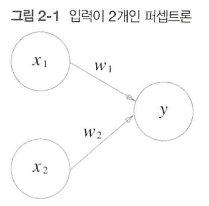

1 - chapter 2 퍼셉트론
퍼셉트론
다수의 신호를 입력으로 받아 하나의 신호를 출력
신호 - 전류나 강물처럼 흐름이 있는 것

원 - 뉴런, 노드
입력 신호가 뉴런에 보내질 때는 각각 고유한 가중치가 곱해짐
뉴런에서 보내온 신호의 총합이 정해진 한계를 넘어설 때만 1을 출력
- 한계 - 임계값

perceptron은 복수의 입력 신호 각각에 고유한 가중치를 부여
가중치는 각 신호가 결과에 주는 영향력을 조절하는 요소로 작용
가중치가 클수록 해당 신호가 그만큼 더 중요하다는 의미
AND gate


NAND gate


OR gate


퍼셉트론으로는 XOR gate 구현 불가


multi-layer perceptron


def AND(x1, x2):
x = np.array([x1, x2])
w = np.array([0.5, 0.5])
b = -0.7
tmp = np.sum(w * x) + b
if tmp <= 0:
return 0
else:
return 1def NAND(x1, x2):
x = np.array([x1, x2])
w = np.array([-0.5, -0.5])
b = 0.7
tmp = np.sum(w * x) + b
if tmp <= 0:
return 0
else:
return 1
def OR(x1, x2):
x = np.array([x1, x2])
w = np.array([0.5, 0.5])
b = -0.2
tmp = np.sum(w * x) + b
if tmp <= 0:
return 0
else:
return 1def XOR(x1, x2):
s1 = NAND(x1, x2)
s2 = OR(x1, x2)
y = AND(s1, s2)
return yprint(XOR(0, 0))
print(XOR(1, 0))
print(XOR(0, 1))
print(XOR(1, 1))